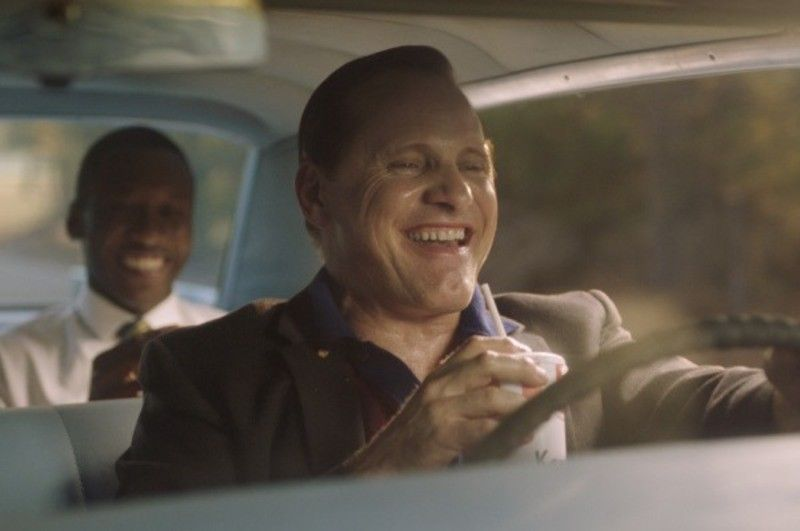
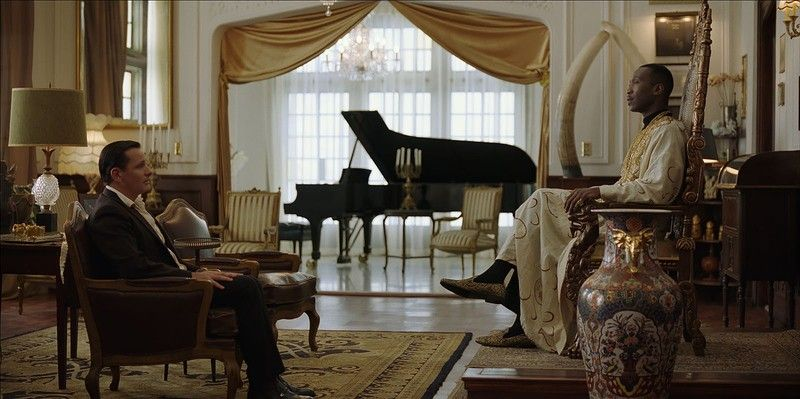

 Но высказывание Питера Фарелли куда сложнее. Дело в том, что «Зеленой книгой» в Америке назывались справочники, в которых содержались адреса ресторанов и гостиниц, где можно появляться чернокожим. Юг США даже в 1960-годы оставался крайне расистским: неграм невозможно было не то, что обедать с белыми людьми, а примерить костюм в магазине или сходить в туалет при ресторане. Для темнокожих существовали «свои» места – уличный сортир, похожий на курятник, забегаловки… Дон Ширли – знаменитый и богатый пианист, любимец клана Кеннеди, сполна ощущает все это на себе. То есть белые аристократы готовы арендовывать для него крутые залы с элитными роялями, чтобы насладиться его искусством, но сидеть с ним в одном ресторане они не могут себе позволить
Для чего все-таки Дон отправляется на гастроли? Так ли ему нужны деньги? Вряд ли, его квартира уставлена антиквариатом, дома он восседает на золоченном троне – именно так, видимо, борется с комплексами неполноценности. Но Дон очень принципиальный человек: он пытается изменить отношение людей и страны к своей расе даже путем собственных унижений. Ведь кто-то должен быть первым.